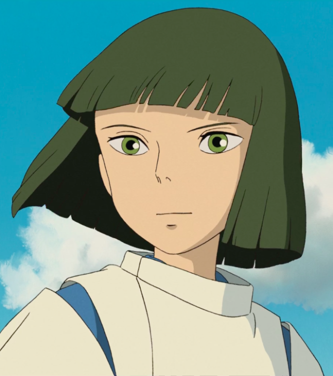
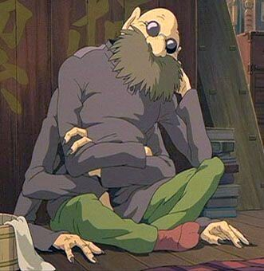
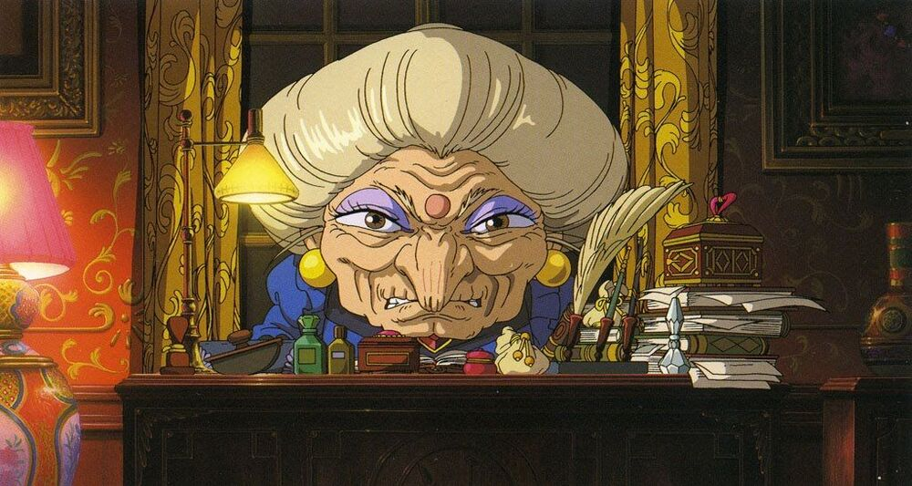
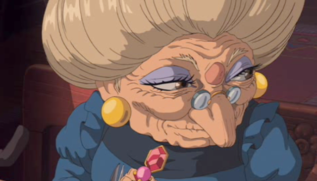
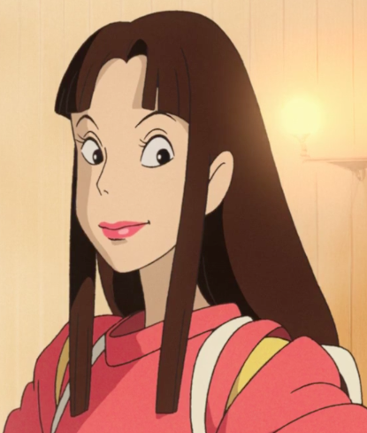

Chihiro Ogino

Chihiro is a shy, pessimistic, 10-year-old girl. At the beginning of the movie, she and her parents are in the process of moving to a new town. When her father takes the wrong turn, they end up near what her father thinks is "an abandoned amusement park." In reality. it is a bath house for spirits which operate at night time. Her parents are turned into pigs after they eat the food of the spirits She attempts to run away, but Haky advises her to weork for Yubaba until she can find a way to turn her parents back to normal.
Haku
Haku is Chihiro's first friend in the strange world. He studies with the sorceress Yubaba and has magical powers. It's said he lost his way home as well as his name in the world of spirits.
Kamajii
An old man who is reponsible for the boilder room of ABURAYA. He also makes medicines that are put in the baths. He helps Chihiro many times. He seems to be a spirit of a spider, as he has six arms and two legs. His name comes from kamaba "boiler room" and jii "old man"
Yubaba
The evil, greedy witch that runs the spirit bath house where Chihiro is forced to work. She is known to be very powerful and has the ability to turn into a bird. She has a very large son whom she takes care of at the bath house and only shows her nice nature to him. When people begin to work at the bathhouse she signs a contract with them in whcih she changes and takes their name.
Zeniba
The twin sister of Yubaba. Although she looks exactly the same as Yubaba, she seems to have a very different personality. She holds the key to the story.
No Face

No Face is an odd spirit that takes interest in Chihiro. Chihiro lets No Face into the bathhouse through a side door. At first, he is a strange cloaked, masked wraith that merely breathes and smiles. No Face is a lonely being who seems to sustain itself on the emotions of those he encounters, particularly their emotional reception to his gifts. He is helpful to Chihiro because she helped him, whereas after observing the bathhouse staff's reaction to gold and his own attempts to win them over with more gold, he reacts to their greed by becoming a grotesque monster which eats lots of food and some of the staff. He calms down and reverts to his former state after he leaves the bathhouse's influence. At the end, he stays with Zeniba as a helper.
Lin
A worker at the bathhouse who becomes Chihiro's caretaker. Although cold at first, she warms up to Chihiro and grows a strong bond with her. She warns No Face, who had previously gone on a rampage, not to harm Chihiro or there would be trouble. At the end, she is very happy for Chihiro when she finally manages to find her way home.